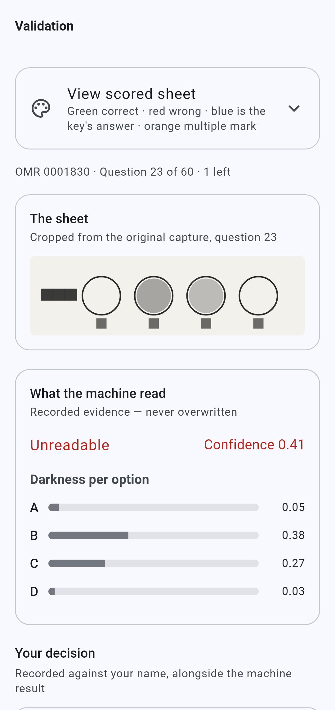
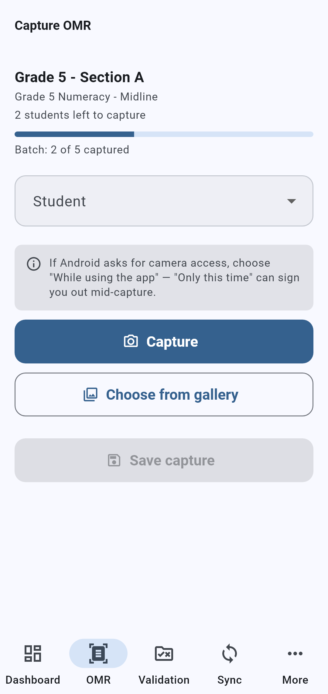
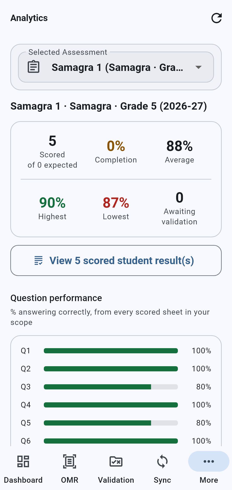

● Live in 129 schools
NCP Assessment App: an offline-first OMR platform
Teachers photograph OMR answer sheets with a phone camera. The app reads and scores them, works offline in the field, sends unclear marks to a supervisor for review, and produces subject-wise report cards. I built it with AI coding agents and presented it to the NCP board in Oct 2026.
- 5,572 students live
- 129 schools
- 993 automated tests